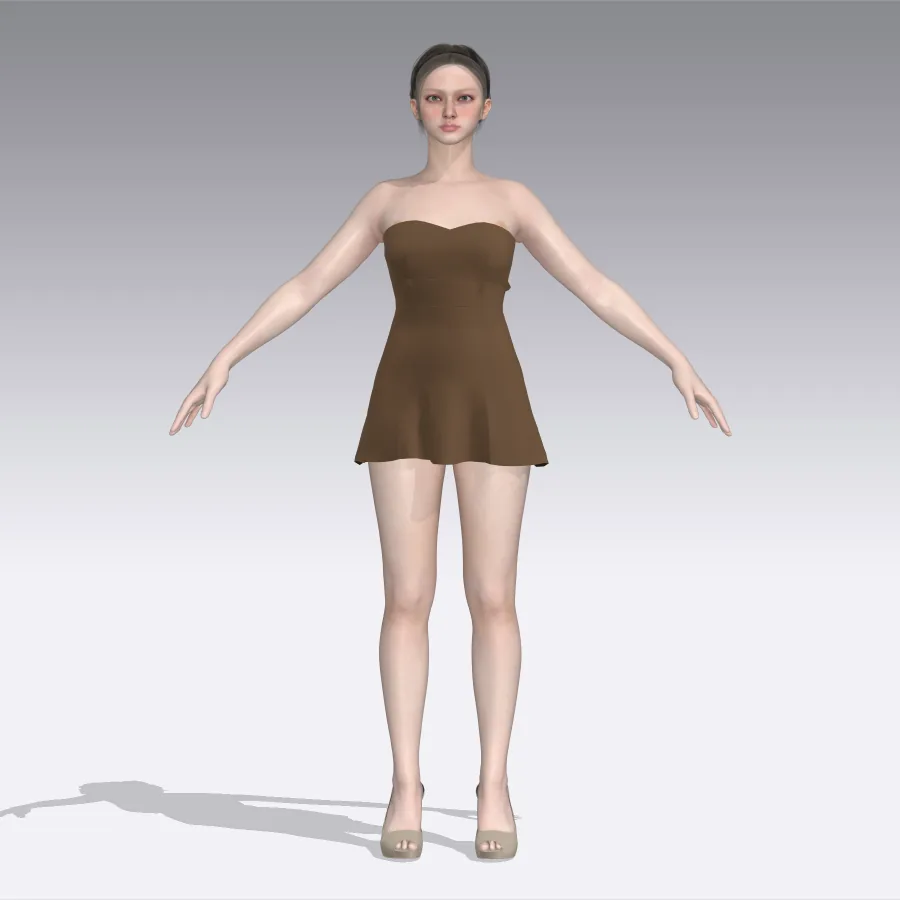
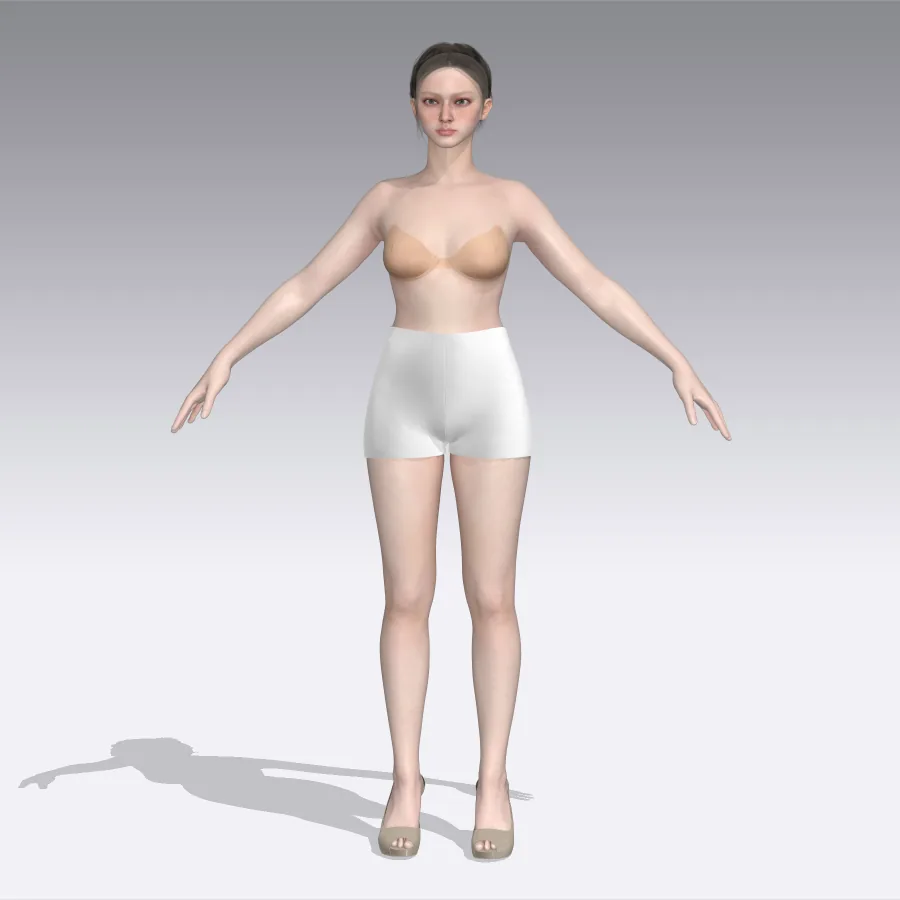
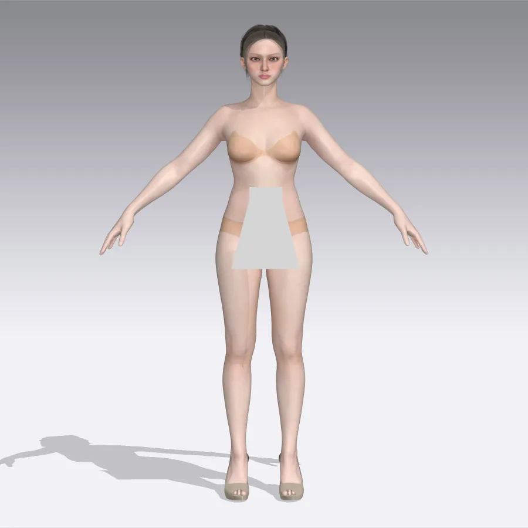

Chinese New Year animation
One of my first animations, made to celebrate Chinese New Year. It's special because it was my first time using mesh animation, which I used on the lantern's tassel.
As a Graphic Information Technology full-stack web development major at Arizona State University, I blend my passion for graphic design, UI, and photo retouching with skills in 3D modeling and web development. Growing up Gen Z, I've always been immersed in the digital world, and my love for computers naturally led me to dive into coding and full-stack development.
What sets me apart? I'm not just about creating visually stunning designs — I bring them to life. Whether it's building immersive websites, crafting dynamic advertisements, or pushing editorial projects to new dimensions, I use 3D modeling to create experiences that go beyond the screen and leave a lasting impression.
Great design isn't just about aesthetics; it's about innovation, interactivity, and making connections in this fast-evolving digital age. Let's build something extraordinary together!
Drag the handle on any photo to compare the Before and After.


Blemishes are removed and skin tone is evened to reveal a professional headshot that still looks like the client. This client's photo was also low quality, so I made some quality enhancements as well.


Whether it's a subtle enhancement or a complete transformation, my goal is to make each subject look confident and beautiful in their own skin.

Behind the camera too. I shoot on a Sony mirrorless body and do the full edit in Lightroom and Photoshop: color grading, skin work, and background cleanup. Natural light, a field of tulips, and a palette that leans into the pinks.
One of my first animations, made to celebrate Chinese New Year. It's special because it was my first time using mesh animation, which I used on the lantern's tassel.
I made this animation to challenge my ability to tell a story while keeping the motion simple, readable, and expressive.
A motion graphic exploring moving typography. I imagined it as the title screen for a snake video game.
I rebuilt a cartoon dog as a layered Illustrator rig (body, ears, eyes and limbs on separate layers) and animated it in After Effects to recreate the classic frantic running scene from the show. The goal was to nail the timing and squash of a run cycle with a puppet-style rig.


In my free time I run a small online clothing business. I use my design experience to create magazine spreads to market my clothes. In some spreads I even blend 3D models into the design to bring a more whimsical, fantasy-like feel to the digital magazine.

I shot and edited all product photos myself. The brand's theme is dreaming, so every fantasy element for the website and branding was 3D modeled and finished in Photoshop.

A four-page editorial zine on the 1960s hippie movement, laid out in InDesign. I paired retro display type with collage textures — torn paper, pressed flowers, polaroids and a hand-cut "Flower Power" headline — to make the layout feel like it was pulled from a scrapbook of the era.


A display serif I built with full upper and lower case, punctuation and accented characters. Type in the box to try it out.
Ariel Strother
3D modeling isn't part of my degree program — I taught myself Blender. I use it for product visualization, brand visuals, interior and architectural scenes, and backgrounds for streams, promos and interactive websites.
A product showcase of lip stain tubes for the fictional brand Agate, from wireframe and matcap passes to final renders.


Garments patterned and simulated in CLO 3D: a strapless mini dress, bike shorts, and a teddy, draped on a digital avatar.



 Wonderlust Travel
Responsive destination page for Majorca with art-directed images that swap by screen size.
HTML · CSS · responsive images
Wonderlust Travel
Responsive destination page for Majorca with art-directed images that swap by screen size.
HTML · CSS · responsive images
 Civic Lens
Team build of an independent news site with a dark-mode toggle and embedded video stories.
HTML · CSS · JS · team project
Civic Lens
Team build of an independent news site with a dark-mode toggle and embedded video stories.
HTML · CSS · JS · team project
 Planner App
A to-do planner with due dates, work windows, and day, week and month views, built in vanilla JavaScript.
HTML · CSS · JavaScript
Planner App
A to-do planner with due dates, work windows, and day, week and month views, built in vanilla JavaScript.
HTML · CSS · JavaScript


Time zone: Eastern (New York, NY)
Arizona State University
I'm excited to see if I'm a good fit for your team!